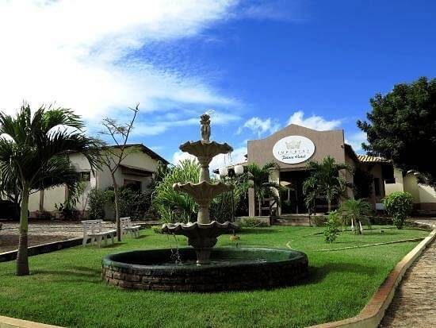
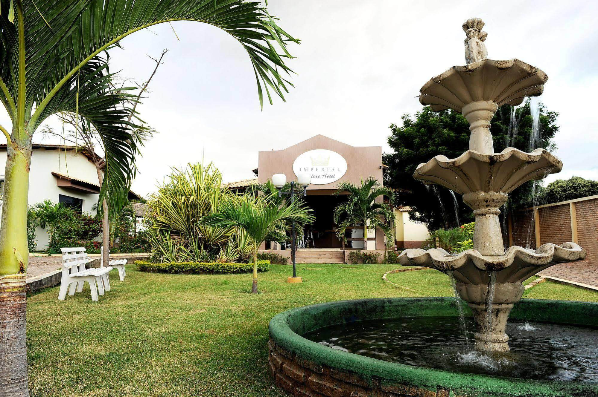
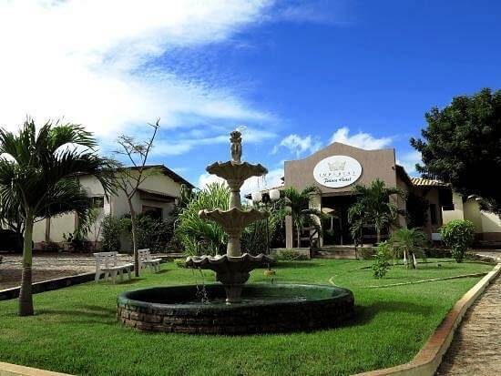
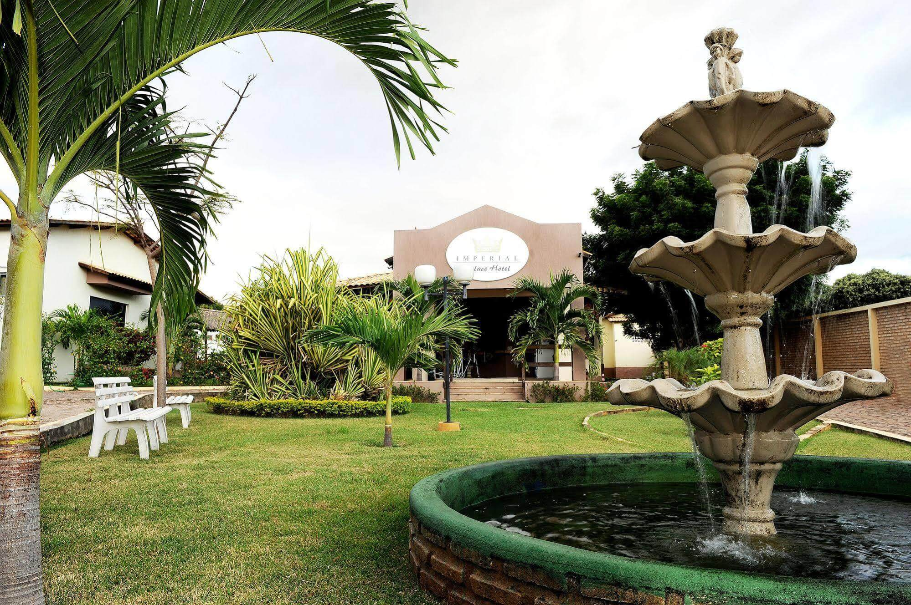
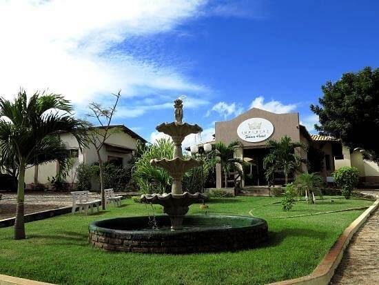
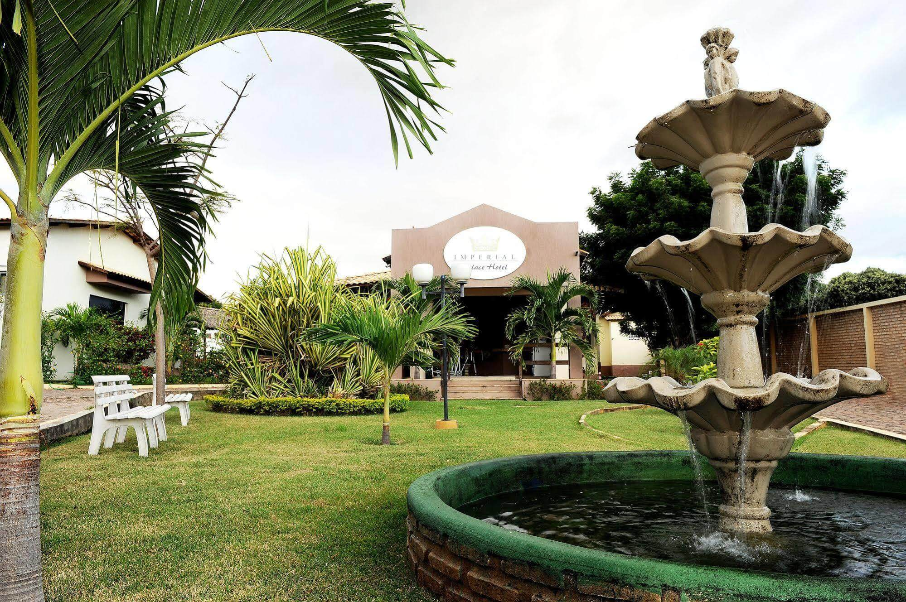

Fotos e Sua Localização
 



O Imperial Palace Hotel está localizada em Juazeiro do Norte, Ceará. Para mais detalhes, veja o mapa abaixo:
Se você deseja viver uma experiência luxuosa e tranquila durante sua viagem a Juazeiro do Norte, Crato ou Barbalha, no Ceará, o Imperial Palace Hotel by Nobile é a opção de hospedagem que você procura. Com ambientes aconchegantes, excelente localização e um atendimento de alta qualidade, o Imperial Palace Hotel by Nobile oferece uma hospedagem completa, incluindo acomodações confortáveis, área de lazer, espaço para eventos, além dos serviços e comodidades que garantem mais qualidade a sua hospedagem.


O Imperial Palace Hotel está localizada em Juazeiro do Norte, Ceará. Para mais detalhes, veja o mapa abaixo: